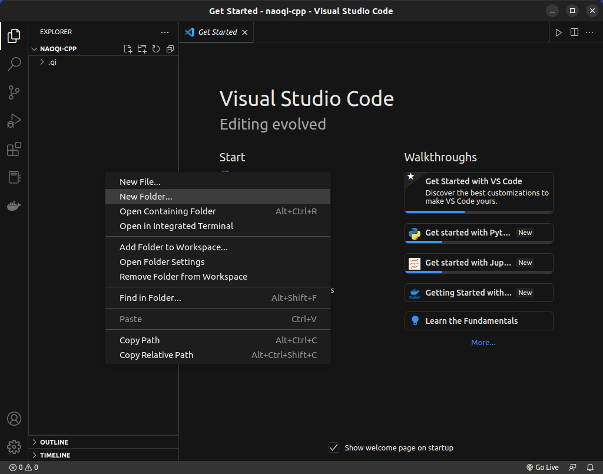
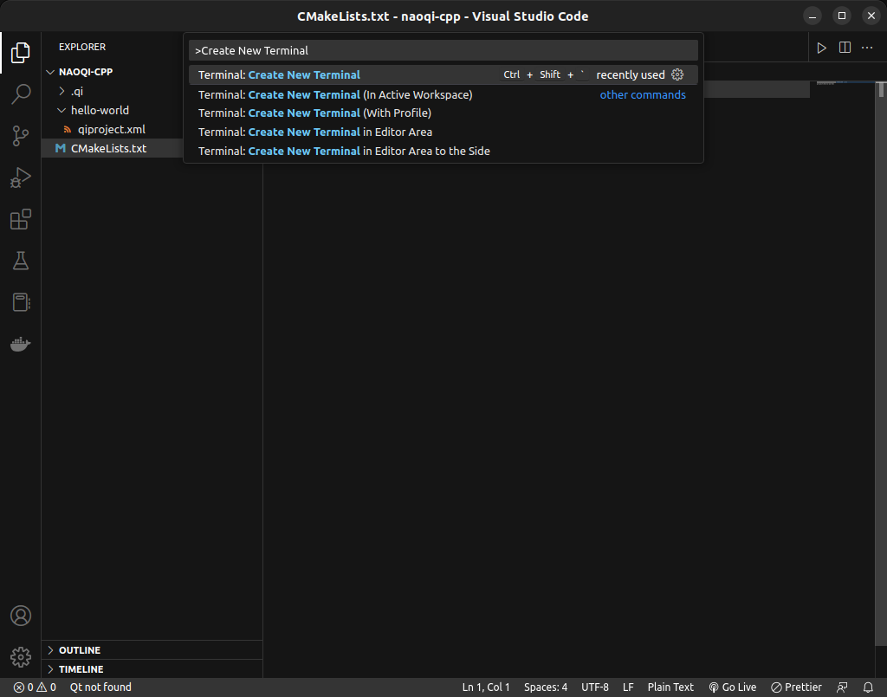
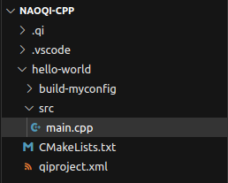

Creating your first C++ project
Now that you have the NAOqi C++ SDK installed, this tutorial will walk you through running a simple "Hello, world!" program.
Setting up your environment
Start by opening up Visual Studio Code. Click " Open Folder...", and navigate to your worktree directory. If you used robolab-installer, this folder will be found
Open Folder...", and navigate to your worktree directory. If you used robolab-installer, this folder will be found ~/Documents/naoqi-cpp.
Right click within the Explorer pane (on the left side). Create a new folder, and name it hello-world.

Creating qibuild.xml
Right click on the new folder you created, and create a file named qiproject.xml. This file is used by qiBuild to know how to manage dependencies between the libraries your project uses. Begin by specifying the project name and maintainer.
Note
The name of your project directory and the project name in the file qiproject.xml do not necessarily have to be the same.
Creating CMakeLists.txt
The file CMakeLists.txt is used to know how to build the source code corresponding to your project.
Right click on your project folder again, and create a file named CMakeLists.txt. In this file, you'll specify the minimum required version of CMake, your project name, and what file to build.
Note
The file name is case-sensitive, so make sure you use the correct capitalization.
Configuring qiBuild
Now that you've specified your project information, you need to prepare qiBuild to build your project.
Open a terminal within VS Code by opening the Command Palette (Control+Shift+P), and entering "Create New Terminal".

Navigate to your project directory within the terminal, then run the qiBuild configure command.
Tip
If you get an error upon configuring qiBuild, make sure both your CMakeLists.txt and qiproject.xml files are located within your project folder.
Upon successful configuration, there will be a build folder located within your project directory.
Writing your first program

Creating your source tree
Begin your program by creating a folder called src/ within your project folder, then creating a file named main.cpp. Your directory tree should look something like this:
Writing your code
In main.cpp, write a simple "Hello, world!" program.
Building your code
Click back into your terminal, and within your project directory, run the following command:
This command creates an executable file in the build-myconfig/sdk/bin directory.
Running your code
Navigate to the build-myconfig/sdk/bin directory within your terminal.
Finally, execute your binary.
The program should output the following:
Congratulations! You've successfully written your first C++ program using the qiBuild framework.